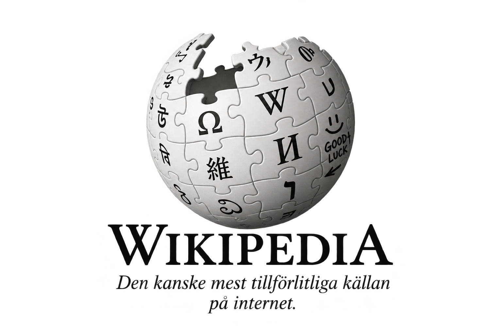

ARPANET startades genom att idén om internet kom upp 1963. Det första medelandet som skickades med ARPANET skickades 1969 klockan 23:15. ARPANET användes för att kunna kommunicera och skicka information mellan olika och flera datorer på långt håll Det är viktigt för Internets historia eftersom ARPANET var en föregångare till dagens internet, ungefär som storebrorsan till internet.
Tim Berners-Lee var skaparen av World Wide Web, alltså WWW. Han skapade webben år 1989. Den blev tillgänglig för allmänheten 1991 genom att han publicerade information om den och skrev om den i nyhetsgrupper. Webben började sedan ta fart på riktigt i april 1993. World Wide Web skapades för att det skulle vara enkelt att länka olika saker och information till varandra. Tanken var också att webben skulle vara fritt att använda.
Mosaic var en av de första stora webbläsarna och kom år 1993. Den blev viktig för webbens utveckling eftersom den gjorde webben enklare att använda. Mosaic kunde visa både text och bilder tillsammans, vilket gjorde att många fler började använda internet.
En IP-adress är ett antal siffror som identifierar olika enheter på internet. DNS används för att översätta webbadresser till IP-adresser. DNS behövs eftersom det är mycket lättare att komma ihåg en adress som youtube.com än ett långt nummer.
Sveriges första webbsida skapades 1991. Den skapades av forskare från univerisetet CERN och de svenska universitetet KTH. Sidan inehöll information om forskning, nätverk och datornätverk. Vissa av dom gammla svenska sidorna finns fortfarande sparade i olika arkiv och internetmuseum.
...
...
...